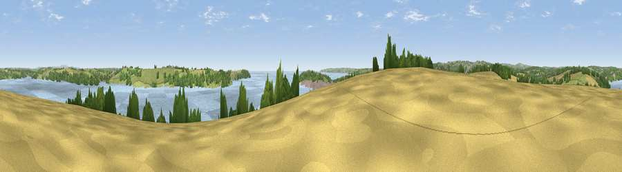

Viewpoint near Mylor Churchtown
#11784 in England · top 27% of its area beats it · near Mylor ChurchtownWhere it is
The exact computed spot (SW 82275 34475). Click the marker for map links.
The view, rendered

A 360° render of this exact spot computed from the terrain model, tree cover and land cover — summer colours, afternoon light, calibrated against photographs of famous viewpoints. Real trees, hedges and buildings will differ in detail.
The panorama
Grey silhouette: terrain skyline in each direction (720 bearings, Earth curvature and refraction included). Dashed green: skyline with trees (+15 m) and buildings (+8 m) as obstacles. Blue strip: how far the ground is visible on each bearing.
Where the view opens
Wedge length = distance to the farthest visible ground on that bearing (vegetation-aware). Rings at 10, 25 and 50 km.
What fills the view
54% water · 21% grassland · 15% woodland · 9% cropland · 1% built-up
Angular shares of the visible panorama (visual magnitude), not map area. Landscape diversity 0.53 (0–1 Shannon).
Key numbers
More beautiful places nearby
The staircase of upgrades: each row has a higher view potential than everything closer. Driving times are estimates from straight-line distance, calibrated against real road routing — check an actual route before setting out.
| Place | Direction | Drive | Score |
|---|---|---|---|
| Drake's Downs | SE · 4 km | ~10 min | 71.9 |
| Viewpoint near St. Keverne | SSW · 12 km | ~23 min | 72.2 |
| Viewpoint near Lanner | WNW · 12 km | ~23 min | 74.5 |
| Carn Brea | WNW · 15 km | ~27 min | 81.1 |
| St Agnes Beacon | NW · 19 km | ~33 min | 86.1 |
| Viewpoint near Foxhole | NE · 25 km | ~41 min | 86.4 |
| Viewpoint near Stenalees | NE · 29 km | ~46 min | 88.0 |
| Viewpoint near Crackington Haven | NNE · 67 km | ~90 min | 88.1 |
50.17022, -5.05030 · source: screening · position refined by local search. Computed location — check access rights before visiting.